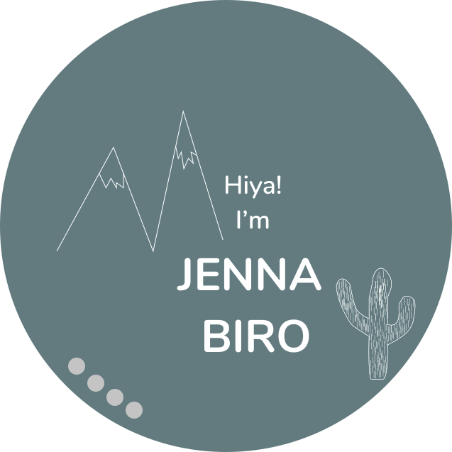

UX/UI DESIGNER
Using human-centered design and research to create delightful web and mobile experiences for users! As a designer and human, especially fond of teamwork and storytelling.

Using human-centered design and research to create delightful web and mobile experiences for users! As a designer and human, especially fond of teamwork and storytelling.

As a user researcher, my goal put simply is: to listen and learn. By utilizing empathy and analyitical skills I am able to gather authentic user data which sets the stage for creating a user friendly design.

Giving physical form, by way of user interface, to tell the story defined by user research and definition. By implementing UX/UI design priniciples, and user testing I iterate and iterate to make a final functional user interface.

Knowledgable of front-end code and able to communicate effectively with developers. Sufficiently skilled in various front-end coding languages including: html, css, javascript, jQuery, and Bootstrap.
Redesign the web experience by making it more responsive. This will bridge the gap between users who want to get involved and the organization, thus streamlining the process and increasing revenue and attention.
Dining Decisions Made Easy. CHOOSINE is a mobile application that eliminates the indecisiveness of where to eat with others.
A safe and informative COVID-19 air travel app to comfort travelers concerned about air travel during the pandemic with efficient booking in conjunction with destination based COVID-19 data.